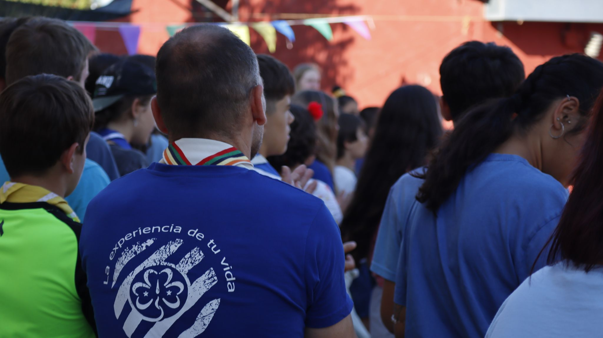
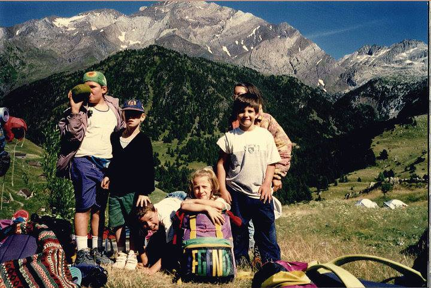
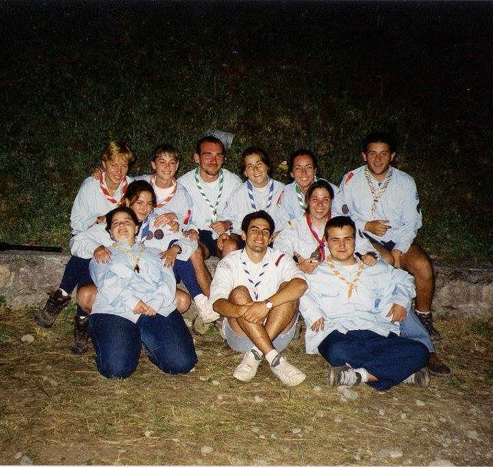
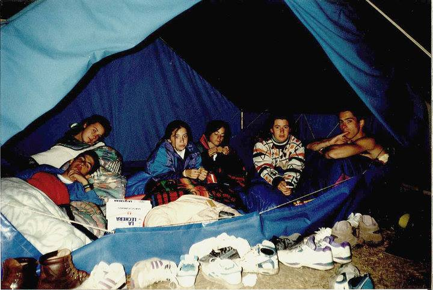

1908
Baden Powell y el movimiento Scout
Robert Baden-Powell funda el movimiento Scout en Inglaterra, para ofrecer a los niños una ocupación, un espacio y diferentes formas en las que divertirse.

Un repaso por la historia del Guidismo y Escultismo Femenino y la Asociación Mundial
Durante más de 100 años, alrededor de 250 millones de Guías han transformado vidas y construido un mundo mejor a través del desarrollo del liderazgo, acción comuntaria, servicio, educación en igualdad y empoderamiento.
1908
Robert Baden-Powell funda el movimiento Scout en Inglaterra, para ofrecer a los niños una ocupación, un espacio y diferentes formas en las que divertirse.
1909
Un grupo de niñas aparece en una reunión de Boy Scouts en Reino Unido. Se les declara Girl Scouts, hasta que Baden Powell decide promover un Movimiento que responda a las necesidades de las niñas.
1910
Se establece oficialmente la Girl Guide Association en Reino Unido bajo el liderazgo de Agnes Baden-Powell, hermana de Robert.
1920
Se celebra la Primera Conferencia Mundial en Inglaterra, donde representantes del mundo del Guidismo y Escultismo Femenino tienen la oportunidad de conocerse e intercambiar ideas y experiencias.
1924
El Guidismo y Escultismo Femenino se dan a conocer al Consejo Internacional, y por primera vez los grupos planifican viajes al extranjero, con el Primer Campamento Mundial en Foxlease, Reino Unido, donde acuden 1.100 niñas y mujeres jóvenes de 40 países diferentes.
1926
Se propone la idea de formar una asociación mundial después de la 4ª Conferencia Mundial, como respuesta a la necesidad de los representantes de los países de crear algo más sólido y vinculante.
1928
Delegados de 26 países se reúnen en la 5ª Conferencia Internacional en Hungría, donde forman la Asociación Mundial de las Guías Scouts (AMGS), con una Oficina Mundial ubicada en Londres.
Una promosa frente al espejo que inicia una historia con más de 90 años de vida
Ahora mismo, con casi 500 socias y socios en la Asociación Guías de Aragón, nos encontramos con que el Guidismo aragonés es el principal núcleo de Guías en España.
1929
Marita Abrisqueta lee algo relacionado con el Movimiento Guía, y escribiendo a Londres consigue formalizarse como Guía Aislada. Realiza su promesa frente al espejo de su baño, a través de una quedada telefónica con una Jefa de Compañía de Londres.
1930
Se organiza en Zaragoza un grupo de Guías, siendo la primera ciudad española en incorporarse al Movimiento Guía.
1933
Se crean las Guías de España. Las secciones de Muchachas Exploradoras que venían funcionando en Exploradores de España se integran en el nuevo movimiento de manera coordinada con Marita Abrisqueta como Comisaria Nacional de Guías.
1936
Se crean Grupos de Guías en varias provincias de la región española, que ven suspendida o limitada su actividad como consecuencia de la Guerra Civil, lo que deriva en la desaparición de algunos de ellos.
1946
Un grupo de muchachas le pide a Ana María de Olazabal, antigua compañera Guía de Marita Abrisqueta antes de la Guerra, que funde de nuevo el Guidismo en España, formando en San Sebastián la primera compañía en la que Olazabal figura como jefa.
1960
Se constituye formalmente en la ciudad de Zaragoza el Grupo 1 Nuestra Señora del Pilar, con Chon Marqueta, Josefina Sánchez, Pilar Gazo y Adoración Vitoria al frente. 60 Guías y Alitas constituyen el primer núcleo del Guidismo aragonés.
1984
El Movimiento Guía se expande de nuevo por España y se constituye la Federación Española del Guidismo.
2010
La Asociación Mundial de Guías Scout celebra el centenario del Guidismo y Escultismo Femenino internacional.


